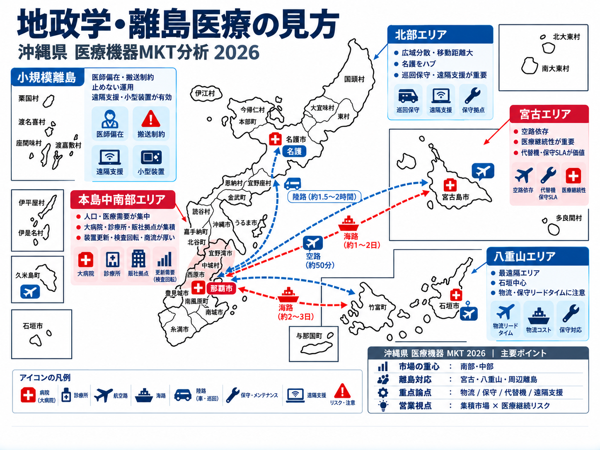

北部医療圏
A4,138百万円
人口 100,751人 / 許可病床 1,483床
性格：やんばる広域・北部基幹・救急搬送・保守即応
主要市町村：名護市・国頭村・大宜味村・東村・今帰仁村・本部町・伊江村・伊平屋村・伊是名村
商談仮説：更新+救急US+保守即応/巡回点検
Google Mapsで見る医療機器商社・医薬品卸・SPD/材料事業者・メーカー営業が共通で使える、公開情報＋添付データ統合のニュートラル版。特定企業の優劣を断定せず、地域医療構造・人口動態・政策・医師会・販社導線を俯瞰します。
沖縄県の医療機器市場は、南部・中部に人口・病床・急性期機能が集中する一方、北部・宮古・八重山では離島・へき地・搬送制約により、保守即応、代替機、遠隔支援、可搬型装置の価値が高い二層構造です。
人口 100,751人 / 許可病床 1,483床
性格：やんばる広域・北部基幹・救急搬送・保守即応
主要市町村：名護市・国頭村・大宜味村・東村・今帰仁村・本部町・伊江村・伊平屋村・伊是名村
商談仮説：更新+救急US+保守即応/巡回点検
Google Mapsで見る人口 518,742人 / 許可病床 4,144床
性格：民間急性期・救急・循環器・整形・人口維持
主要市町村：宜野湾市・沖縄市・うるま市・恩納村・宜野座村・金武町・読谷村・嘉手納町・北谷町・北中城村・中城村
商談仮説：CT/MRI/VL更新+救急/循環器/検査効率
Google Mapsで見る人口 740,743人 / 許可病床 6,544床
性格：県内最大市場・大学/県立/民間急性期・行政中枢
主要市町村：那覇市・浦添市・糸満市・豊見城市・南城市・西原町・与那原町・南風原町・八重瀬町・離島町村等
商談仮説：高機能装置+回転率改善+診療所面展開
Google Mapsで見る人口 53,989人 / 許可病床 565床
性格：離島ハブ・県立宮古・生活習慣病・産婦人科・透析
主要市町村：宮古島市・多良間村
商談仮説：代替機/遠隔保守+救急POCUS+離島SLA
Google Mapsで見る人口 53,255人 / 許可病床 436床
性格：最遠隔・海空路依存・県立八重山・災害/搬送BCP
主要市町村：石垣市・竹富町・与那国町
商談仮説：保守/BCP/小型装置+遠隔連携/巡回
Google Mapsで見る| 二次医療圏 | 人口 | 許可病床 | 市場推計 | 構成比 | 医師10万対 | 診療所10万対 | 優先 | 営業上の意味 |
|---|---|---|---|---|---|---|---|---|
| 北部 | 100,751 | 1,483 | 4,138.1百万円 | 8.6% | 229.1 | 63.2 | A | やんばる広域・北部基幹・救急搬送・保守即応 |
| 中部 | 518,742 | 4,144 | 14,848.2百万円 | 30.9% | 230.6 | 50.3 | S | 民間急性期・救急・循環器・整形・人口維持 |
| 南部 | 740,743 | 6,544 | 25,419.9百万円 | 52.8% | 362.4 | 70.1 | S | 県内最大市場・大学/県立/民間急性期・行政中枢 |
| 宮古 | 53,989 | 565 | 1,961.1百万円 | 4.1% | 221.4 | 68.7 | B | 離島ハブ・県立宮古・生活習慣病・産婦人科・透析 |
| 八重山 | 53,255 | 436 | 1,732.7百万円 | 3.6% | 200.0 | 87.3 | B | 最遠隔・海空路依存・県立八重山・災害/搬送BCP |
沖縄は、直線距離だけでなく、台風、航空/船便、部品在庫、島内代替性、医師偏在、救急搬送を同時に考える市場です。白地図の上に、医療圏・離島・医療継続性の観点から営業/保守上の要点を重ねて整理しました。

県人口・病床・診療所・急性期機能が集中。営業/物流/設置/保守の主軸であり、更新需要と紹介連携の起点。
市場規模は相対的に小さい一方、広域分散・搬送制約・保守即応が重要。基幹病院と診療所ネットワークを面で支える視点が必要。
離島医療では「止めないこと」が価値。代替機、巡回点検、遠隔支援、可搬型装置、災害時連絡網が商談条件になりやすい。
設置、納品、保守部品、技術者移動に影響。余裕を持った工程設計が必要。
離島では救急搬送・専門医アクセスが制限されるため初期診断機器の価値が上がる。
南部に医師が集中。北部・宮古・八重山は少数医師でも使える装置/教育が鍵。
地縁・既存商流・材料/SPD/薬業卸の影響が強い。販社別役割分担が必要。
第8次沖縄県医療計画、地域医療構想、病床機能報告、在宅医療体制整備が市場の前提です。急性期装置更新だけでなく、回復期、在宅、遠隔支援、周辺消耗品も含めて考える必要があります。
| 医療圏 | 高度急性期 | 急性期 | 回復期 | 慢性期 | 休棟等 | 合計 |
|---|---|---|---|---|---|---|
| 北部 | 20 | 372 | 220 | 732 | 50 | 1,394 |
| 中部 | 997 | 1,598 | 1,155 | 1,172 | 67 | 4,989 |
| 南部 | 411 | 3,182 | 1,329 | 1,651 | 95 | 6,668 |
| 宮古 | 4 | 250 | 66 | 281 | 18 | 619 |
| 八重山 | 23 | 269 | 44 | 44 | 70 | 450 |
病床機能の分化と連携を進める。回復期/在宅との接続が重要。
第8次計画では在宅医療の圏域を二次医療圏単位で整備。医師会・市町村との連携が鍵。
台風・海空路寸断・地震津波リスクに備え、装置停止時の代替策が選定条件化しやすい。
那覇市・沖縄市・浦添市・うるま市・名護市が上位。離島は石垣市・宮古島市を基点に、竹富町・与那国町・多良間村などを面で支える設計が必要です。
| 医療圏 | 市町村 | 病院 | 病床 | 診療所 | 人口 | 市場推計 | 構成比 | 優先 | 示唆 | 地図 |
|---|---|---|---|---|---|---|---|---|---|---|
| 南部 | 那覇市 | 17 | 3,205 | 263 | 317,030 | 10,472.9百万円 | 21.8% | S | 最大都市。診療所・病院・医師会・行政接点の中心 | Map |
| 中部 | 沖縄市 | 9 | 1,905 | 82 | 142,679 | 4,573.8百万円 | 9.5% | S | 中部の人口・救急・民間急性期接点 | Map |
| 南部 | 浦添市 | 7 | 1,351 | 85 | 115,702 | 3,899.8百万円 | 8.1% | S | 浦添総合・浦添市医師会・在宅/病診連携 | Map |
| 中部 | うるま市 | 6 | 1,438 | 55 | 125,973 | 3,385.8百万円 | 7.0% | S | 県立中部周辺・慢性疾患/救急導線 | Map |
| 北部 | 名護市 | 6 | 1,455 | 45 | 64,290 | 2,886.0百万円 | 6.0% | S | 北部広域・北部地区医師会病院・救急 | Map |
| 南部 | 南風原町 | 6 | 1,583 | 29 | 40,642 | 2,544.4百万円 | 5.3% | A | 県医師会館・南部導線・医療団体接点 | Map |
| 南部 | 糸満市 | 5 | 1,168 | 30 | 62,569 | 2,390.4百万円 | 5.0% | A | 南部地域病院・診療所面展開 | Map |
| 南部 | 豊見城市 | 4 | 918 | 42 | 65,954 | 2,242.5百万円 | 4.7% | A | 友愛医療センター・南部急性期 | Map |
| 中部 | 宜野湾市 | 3 | 596 | 50 | 100,269 | 2,202.0百万円 | 4.6% | A | 中部/南部接続・診療所密度 | Map |
| 宮古 | 宮古島市 | 4 | 720 | 40 | 55,562 | 1,941.6百万円 | 4.0% | A | 宮古島医療の基点・離島ハブ | Map |
| 八重山 | 石垣市 | 3 | 474 | 30 | 49,530 | 1,456.4百万円 | 3.0% | A | 八重山医療の基点・遠隔/BCP | Map |
| 南部 | 西原町 | 2 | 648 | 22 | 35,728 | 1,268.1百万円 | 2.6% | B | 琉大/西原導線・教育/研究接点 | Map |
| 中部 | 北中城村 | 3 | 867 | 7 | 17,936 | 1,178.5百万円 | 2.5% | B | 中部急性期隣接・高齢者/リハ | Map |
| 南部 | 南城市 | 1 | 199 | 16 | 45,928 | 861.4百万円 | 1.8% | B | 南部東側・地域包括/在宅 | Map |
| 南部 | 八重瀬町 | 1 | 357 | 14 | 32,630 | 823.4百万円 | 1.7% | B | 南部地域医療・診療所接点 | Map |
DPC患者数上位は南部・中部に集中。ただし、県立北部・県立宮古・県立八重山は患者数だけでは測れない地域完結医療・災害/搬送ハブとして重要です。
| 順位 | 医療機関 | 医療圏 | DPC区分 | DPC患者数 | 優先 | 見方 | 地図 |
|---|---|---|---|---|---|---|---|
| 1 | 琉球大学病院 | 南部/中部移転影響 | 大学病院本院群 | 11,990 | S | 県内唯一の医学部附属病院。高度医療・教育・研究・移転後の中部波及 | Map |
| 2 | 友愛医療センター | 南部 | 標準/特定注記あり | 11,171 | S | 救急・急性期・高回転。CT/MRI/FPD/循環器US | Map |
| 3 | 中部徳洲会病院 | 中部 | 標準 | 10,715 | S | 中部最大級の民間急性期。救急・循環器・腹部US | Map |
| 4 | 中頭病院 | 中部 | 特定病院群 | 10,713 | S | 画像診断・検査効率・救急連携 | Map |
| 5 | 那覇市立病院 | 南部 | 標準 | 10,501 | A | 那覇市中核。CT/MRI/FPD/US更新・検査動線 | Map |
| 6 | 沖縄県立中部病院 | 中部 | 標準 | 10,457 | S | 救命・災害・周産期・がん・脳卒中 | Map |
| 7 | 沖縄県立南部医療センター・こども医療センター | 南部 | 標準 | 8,408 | S | 救命・小児・周産期。VL/CT/MRI/小児救急US | Map |
| 8 | 浦添総合病院 | 南部 | 特定病院群 | 7,270 | S | 急性期/救急の高効率。CT/MRI/VL更新 | Map |
| 9 | ハートライフ病院 | 中部 | 標準 | 7,241 | A | 中部急性期。US・FPD・CT/MRI更新 | Map |
| 10 | 南部徳洲会病院 | 南部 | 標準 | 7,073 | A | 南部民間急性期。効率改善・更新提案 | Map |
| 11 | 沖縄協同病院 | 南部 | 標準 | 5,821 | A | 地域急性期。CT/FPD/US・在宅連携 | Map |
| 12 | 沖縄県立北部病院 | 北部 | 標準 | 4,401 | A | 北部基幹・救急/災害。保守即応・救急US | Map |
| 13 | 沖縄赤十字病院 | 南部 | 標準 | 4,256 | A | 災害/救急。FPD/CT/US更新 | Map |
| 14 | 大浜第一病院 | 南部 | 標準 | 4,086 | B | 民間急性期/リハ連携。US/FPD/周辺商材 | Map |
| 15 | 沖縄県立宮古病院 | 宮古 | 標準 | 4,068 | A | 宮古ハブ。CT/MRI/救急US・代替機 | Map |
| 16 | 沖縄県立八重山病院 | 八重山 | 標準 | 4,036 | A | 八重山ハブ。遠隔連携/保守/BCP | Map |
| 17 | 北部地区医師会病院 | 北部 | 標準 | 3,089 | A | 北部急性期・医師会連携。救急/検診/US | Map |
診療所市場は「地域」と「診療科」で訴求を変える必要があります。医師会、薬業卸、材料商社、検査/健診導線を使って、装置単品ではなく運用価値で提案します。
| 診療科/用途 | 優先エリア | 重点商材 | 商談仮説 |
|---|---|---|---|
| 内科・生活習慣病 | 那覇/浦添/沖縄/うるま/名護/石垣/宮古島 | US, FPD, PACS, 有床/検診CT | 高齢化、糖尿病、脂肪肝、腎疾患。腹部US/汎用USの入口 |
| 循環器 | 南部・中部・牧港/急性期周辺 | US, VL, CT, モニタ連携 | DPC循環器症例、病診連携、検査効率化 |
| 消化器 | 那覇/浦添/中部主要市 | US, CT, 内視鏡周辺, PACS | 腹部US、肝疾患、脂肪肝、内視鏡後方連携 |
| 整形外科 | 南部/中部/高齢化地域 | XR/FPD, DEXA, US | 骨粗鬆症・骨折・リハ・手術材料商流 |
| 産婦人科 | 南部/中部/宮古/八重山 | WHC/産婦人科US, PACS/クラウド | 周産期・婦人科・産科医偏在・遠隔連携 |
| 透析・腎疾患 | 那覇/中部/離島中核 | US, FPD, PACS, 消耗品 | 慢性疾患・腎/尿路・定期フォロー |
| 救急/POCUS | 県立/救急病院・離島診療所 | 可搬型US, 救急US, 遠隔支援 | 台風・搬送制約・診療継続価値 |
医師会は、地域医療・在宅・検診・診療所網・開業/承継情報の重要な入口です。公開情報で確認できる数値と、事務局照会が必要な数値を分けて管理します。
| 医師会 | 所在地 | 確認できた施設数/会員数 | 医療機器商社の使い方 | 公式/地図 |
|---|---|---|---|---|
| 沖縄県医師会 | 南風原町新川 | 10地区医師会で構成 | 県全体の政策・学術・医療団体接点 | 公式 / Map |
| 北部地区医師会 | 名護市宇茂佐の森 | 2019年3月1日時点 会員数121名 | 北部地区医師会病院、救急、広域医療、検診導線 | 公式 / Map |
| 中部地区医師会 | 北谷町 | 医療機関検索機能あり。最新会員数は要照会 | 沖縄市・うるま・宜野湾・北谷・読谷など中部診療所導線 | 公式 / Map |
| 浦添市医師会 | 浦添市伊祖 | 令和2年時点 83医療機関・会員267名 | 浦添総合周辺、在宅、地域包括、診療所/開業情報 | 公式 / Map |
| 那覇市医師会 | 那覇市東町 | 医療機関検索 条件未指定190件 | 最大都市の診療所面展開、検診、開業/承継導線 | 公式 / Map |
| 南部地区医師会 | 八重瀬町友寄 | 最新会員数・施設数は要照会 | 糸満・豊見城・南風原・八重瀬・南城市等の診療所面展開 | 公式 / Map |
| 宮古地区医師会 | 宮古島市 | 会員医療機関一覧を公開 | 宮古の病診連携、産婦人科、生活習慣病、訪問診療 | 公式 / Map |
| 八重山地区医師会 | 石垣市登野城 | 最新会員数・施設数は要照会 | 石垣・竹富・与那国の医療継続、県立八重山、遠隔/BCP | 公式 / Map |
本表は、特定メーカー視点ではなく、沖縄で医療機器・材料・消耗品・SPD・薬業卸に関わる全事業者が参考にできるよう、公開情報と市場仮説を整理したものです。取扱メーカー・専売性・実商流は、個別案件ごとに必ず確認してください。
| 商社/卸 | 類型 | 得意領域 | 影響 | 競合/関係性の扱い | 全商社向け示唆 | 拠点 | 公式/地図 |
|---|---|---|---|---|---|---|---|
| 琉球光和 | 総合医療機器・材料・SPD・開業/福祉 | 病院・診療所・材料・開業・介護/薬局支援 | S | 公開情報上は総合商流が強い。取扱メーカー・案件別強みは個別確認 | 大型病院/材料/SPDから装置更新・周辺機器へ接続 | 那覇市 | 公式 / Map |
| 沖縄メディコ | 総合医療機器・材料・物流/共同購買/開業 | 病院・診療所・画像診断・医療材料 | S | 県内総合商社として存在感。メーカー関係は案件別確認 | 競合/協業を分け、情報導線・共同提案可能性を確認 | 浦添市 | 公式 / Map |
| 南西医療器 | 呼吸器・在宅酸素・CPAP・医療機器・離島対応 | 在宅・呼吸器・病院US・産婦人科・離島 | S | 離島/在宅/呼吸器/技術サービス接点。詳細商流は要確認 | US/WHC/POCUS/離島保守・巡回支援で協業余地 | 浦添市/石垣/宮古 | 公式 / Map |
| 沖縄-ムトウ | 全国系総合商社・医療材料・理化学・福祉 | 病院材料・SPD・福祉・全国連携 | A | 全国ネットワークを背景に材料/SPDに強み | 大病院材料/SPD面から装置/周辺商材へ橋渡し | 浦添市/沖縄市 | 公式 / Map |
| アイティーアイ | 医療機器・循環器/手術室系 | 病院・循環器・急性期・民需 | A | 急性期・循環器/手術室周辺の情報導線 | 月次で急性期案件兆候・競合条件を確認 | 沖縄県内 | 公式 / Map |
| エム・ケイ物産 | 心臓血管外科・循環器・IVR・特殊材料 | 急性期・カテ室・手術室 | A | 循環器/IVR/特殊材料系で専門性 | VL/循環器US/手術室周辺で連携余地 | 南風原町 | Map |
| 第一医療器 | 整形外科・人工関節・脊椎・修理 | 整形・手術室・骨粗鬆症 | B+ | 整形領域の施設接点 | DEXA/整形US/リハ周辺で協業余地 | 豊見城市 | Map |
| 中央医療器 | X線・内視鏡・検査・修理 | 診療所・検査・X線 | B+ | 放射線/検査/修理接点 | FPD・診療所XR更新・保守導線 | 南風原町 | Map |
| 沖縄三和メディカル | 医療機器・介護・開業支援 | 診療所・介護・開業情報 | B+ | 地場ネットワーク・協会接点 | 開業/更新情報・診療所面展開 | 宜野湾市 | Map |
| 琉薬 | 医薬品卸・診断薬・医療機器・開業支援 | 診療所・薬局・島嶼物流 | A | 薬業卸網と診療所接点 | 開業/更新/慢性疾患・診療所紹介 | 浦添市 | 公式 / Map |
| ダイコー沖縄 | 医薬品卸・診療機器・放射線・診断薬・衛生材料 | 診療所・薬局・福祉/宮古拠点 | A | 医薬品卸系、宮古含む地域網 | 生活習慣病/骨粗鬆症/診療所網で連携 | 宜野湾市/宮古 | Map |
| スズケン沖縄薬品 | 医薬品卸・試薬・医療機器・材料 | 診療所・薬局・宮古/南風原 | B+ | 医薬品卸系、薬局/診療所網 | 診療所更新/離島補給/在宅連携 | 南風原/宮古 | Map |
CT/MRI/VL/US/FPD/PACSは、検査効率・救急導線・保守継続・人員不足対応で語る。
US/XR/FPD/PACS/DEXAは、診療科別の患者導線、検診、生活習慣病、承継/開業と接続。
可搬型装置、代替機、部品在庫、リモート支援、巡回点検をセット化し、価格差を超える価値にする。
公開情報と添付資料を統合した調査資料です。個別商談では、最新の施設台帳、導入装置、更新年限、販社契約、入札条件、保守契約を必ず確認してください。
| 出典 | 用途 | URL |
|---|---|---|
| 沖縄県推計人口 | 2026年9月1日現在：人口1,466,024人、668,972世帯 | https://www.pref.okinawa.lg.jp/toukeika/estimates/estimates_suikei.html |
| 沖縄県第8次医療計画 | 医療圏、医療提供体制、地域医療構想の基礎 | https://www.pref.okinawa.lg.jp/iryokenko/iryo/1005807/1005824/1028660.html |
| 沖縄県病床機能報告 | 2025年7月1日時点の二次医療圏別機能別病床数 | https://www.pref.okinawa.lg.jp/iryokenko/iryo/1005807/1005832.html |
| 沖縄県地区医療提供体制協議会 | 5つの二次医療圏ごとの地域医療構想調整会議 | https://www.pref.okinawa.lg.jp/iryokenko/iryo/1005280/1026431/index.html |
| 沖縄県医師会 | 地区医師会の所在地・連絡先 | https://www.okinawa.med.or.jp/about/toiawase/ |
| 那覇市医師会 | 医療機関検索 条件未指定190件 | https://nahashi.okinawa.med.or.jp/med_search/list/ |
| 浦添市医師会 | 沿革：令和2年 83医療機関・会員267名 | https://www.uraishi.or.jp/history/ |
| 北部地区医師会 | 沿革：2019年3月1日時点 会員121名 | https://hokuishi.com/hkb/kaicho_aisatsu/enkaku/ |
| 添付資料 | 沖縄県 医療機器MKT徹底分析 2026、47沖縄、市町村別市場、DPC、販社分析 | 社内添付/公開情報統合 |